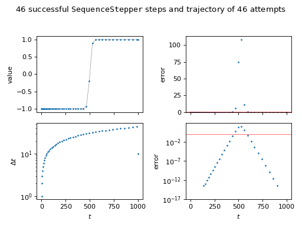

steppyngstounes.sequenceStepper¶
Classes
- class steppyngstounes.sequenceStepper.SequenceStepper(start, stop, sizes, inclusive=False, record=False)¶
Bases:
StepperStepper that takes a series of fixed steps.
- Parameters:
start (float) – Beginning of range to step over.
stop (float) – Finish of range to step over.
sizes (iterable of float) – Desired step sizes. In the event that start plus the sum of sizes will exceed stop, the stepper will terminate at stop.
inclusive (bool) – Whether to include an evaluation at start (default False)
record (bool) – Whether to keep history of steps, errors, values, etc. (default False).
Examples
>>> import numpy as np >>> from steppyngstounes import SequenceStepper
We’ll demonstrate using an artificial function that changes abruptly, but smoothly, with time,
\[\tanh\frac{\frac{t}{t_\mathrm{max}} - \frac{1}{2}} {2 w}\]where \(t\) is the elapsed time, \(t_\mathrm{max}\) is total time desired, and \(w\) is a measure of the step width.
>>> totaltime = 1000. >>> width = 0.01
The scaled “error” will be a measure of how much the solution has changed since the last step, | new - old | / errorscale).
>>> errorscale = 1e-2
Iterate over the stepper from start to stop (inclusive of calculating a value at start).
>>> stepper = SequenceStepper(start=0., stop=totaltime, inclusive=True, ... sizes=range(1,10000), record=True) >>> for step in stepper: ... new = np.tanh((step.end / totaltime - 0.5) / (2 * width)) ... ... _ = step.succeeded(value=new)
>>> s = "{} succesful steps in {} attempts" >>> print(s.format(stepper.successes.sum(), ... len(stepper.steps))) 46 succesful steps in 46 attempts
>>> steps = stepper.steps[stepper.successes] >>> ix = steps.argsort() >>> values = stepper.values[stepper.successes][ix] >>> errors = abs(values[1:] - values[:-1]) / errorscale
As this stepper doesn’t use the error, we don’t expect the post hoc error to satisfy the tolerance.
(
Source code,png,hires.png,pdf) - property errors¶
ndarray of the “error” at each step attempt.
The user-determined “error” scalar value (positive and normalized to 1) at each step attempt is passed to
Stepperviasucceeded().
- next()¶
Return the next step.
Note
Legacy Python 2.7 support.
- Return type:
- Raises:
StopIteration – If there are no further steps to take
- property sizes¶
ndarray of the step size at each step attempt.
- property steps¶
ndarray of values of the control variable attempted so far.
- succeeded(step, value=None, error=None)¶
Test if step was successful.
Stores data about the last step.
- Parameters:
step (
Step) – The step to test.value (float, optional) – User-determined scalar value that characterizes the last step. Whether this parameter is required depends on which
Stepperis being used. (default None).error (float, optional) – User-determined error (positive and normalized to 1) from the last step. Whether this parameter is required depends on which
Stepperis being used. (default None).
- Returns:
Whether step was successful.
- Return type:
bool
- property successes¶
ndarray of whether the step was successful at each step attempt.
- property values¶
ndarray of the “value” at each step attempt.
The user-determined scalar value at each step attempt is passed to
Stepperviasucceeded().
{kind=link}
{kind=link}